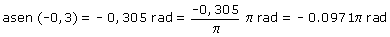

|
Ángulos con igual seno En general hay dos ángulos que tienen el mismo seno y su suma vale π rad. Conviene dar estos ángulos con signo positivo y en función de π También tienen el mismo seno todos los ángulos que difieren en k·2π rad (En este caso k es el número de oscilación que vale: 0, 1, 2,...) Ejemplo: Hallar los águlos cuyo seno vale -0,3  Solución con signo positivo: (2π - 0,0971π) rad = 1,903π rad El otro ángulo que tiene el mismo seno: (π - 1,903π) rad = -0,903π rad Expresado con signo positivo: (2π - 0,903π) rad = 1,097π rad Ambos ángulos suman 3π rad que es lo mismo que π rad |